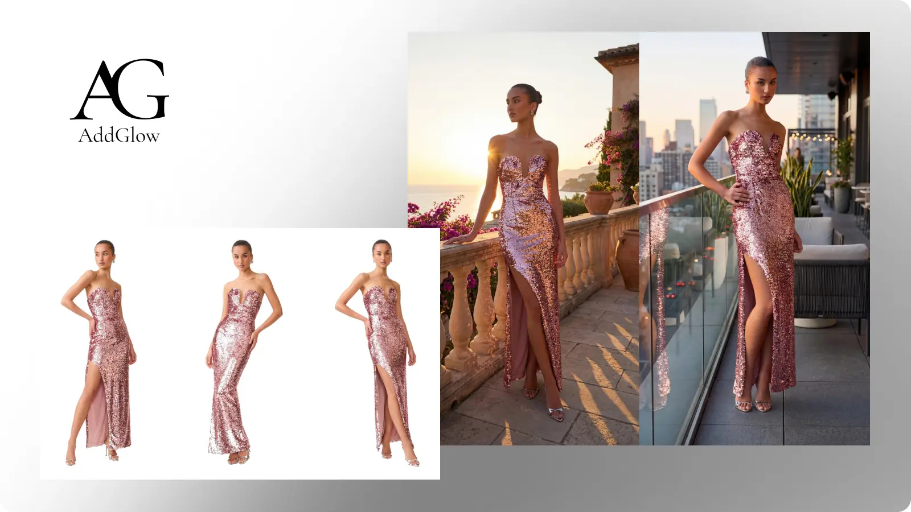
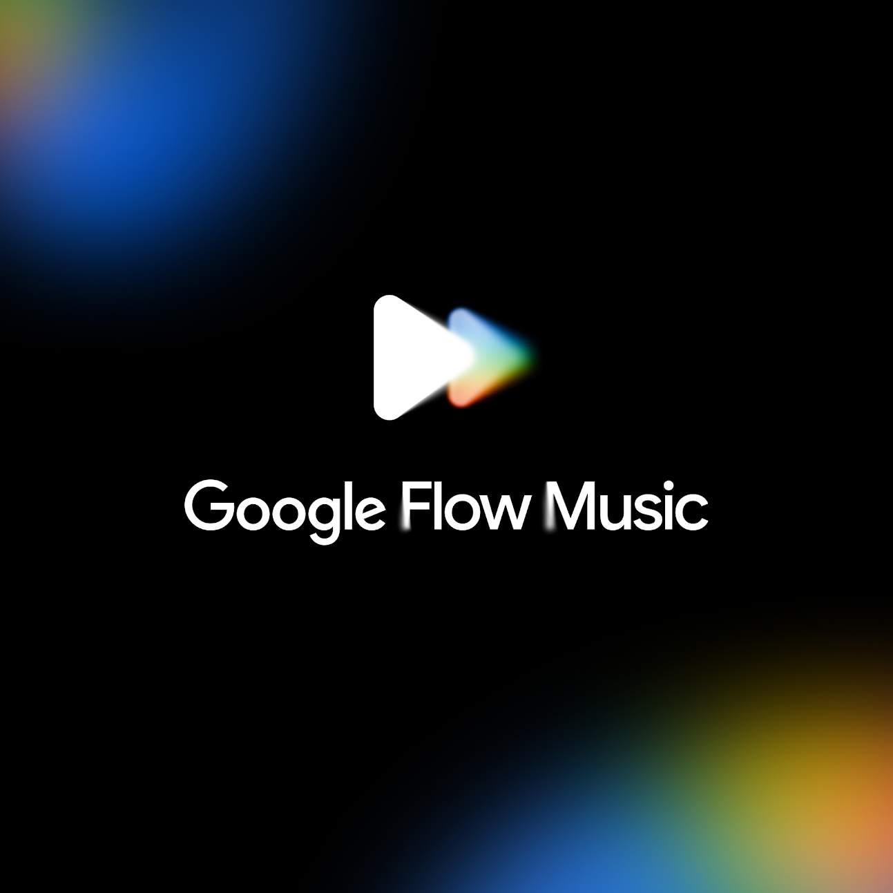
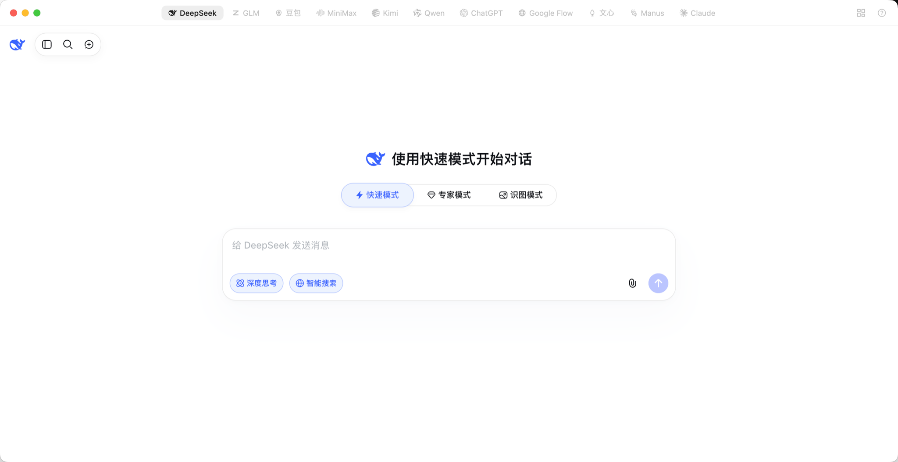
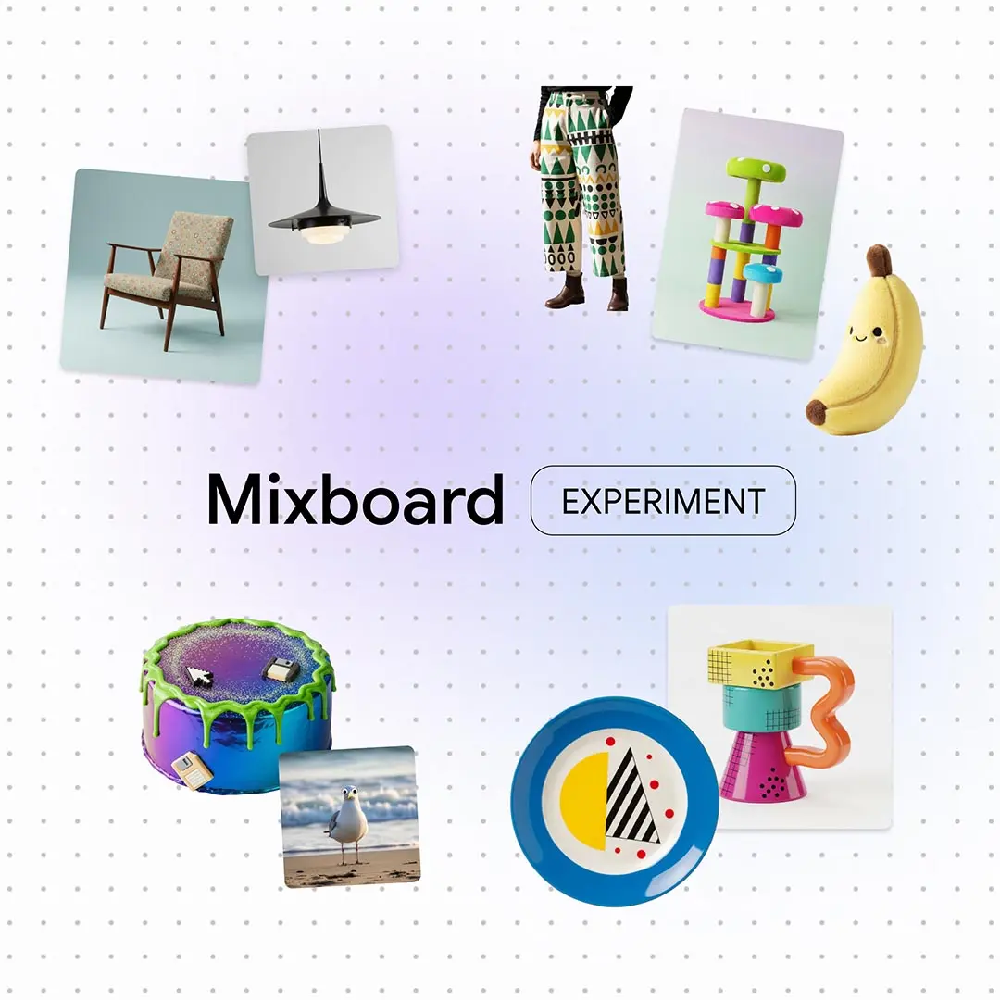

为一款可持续随行杯生成发布文案、主视觉和 15 秒视频。
正在处理请求
正在理解你的创作意图
创建主视觉根据品牌语气与画面描述生成
完成
渲染 15 秒品牌短片组合主视觉、运镜与转场
完成
＋
描述你想生成的场景...
⌁
01
一个入口
15 个世界级 AI 服务02
一个问题
多模型同时回答03
一个工作流
文字、图片、视频连续协作全世界最好的模型，
都在你的圆桌上。
国际与国内主流 AI 服务随时切换。登录一次，就能在同一个工作台持续使用。
ChatGPT02 / 15
一次发问，
提给多个模型。
你的问题
发送给 3 个模型
为“周末城市漫游”策划一个 30 秒短视频开场。
DeepSeek结构与策略
Kimi叙事与文案
Qwen镜头与执行
不同模型间，
快速切换。
对话上下文留在原处，只换一种思考方式继续。

呼之即来，
挥之即去。
灵感出现时，不必离开正在做的事。
OmniAI⌥ Space 隐藏
问任何模型，或者同时问它们。
✳◎✦深+11
输入你的问题...
OmniAI 已显示
多模型工作流，
一气呵成。
每个模型做它最擅长的事，输出自动成为下一步的输入。
镜头 01 清晨，城市还没完全醒来。
镜头 02 一只随行杯穿过地铁、街角和天台。
旁白 “带走温度，不留下负担。”

All AI, one place.